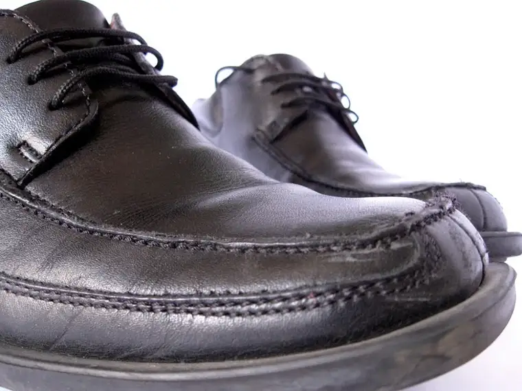

[On occasion, Peace Garden Mama will include a bit of my newspaper work, published mainly Saturdays in The Forum, reprinted here with permission.]
Living Faith:
Making sense of the pope’s departure
By Roxane B. Salonen, The Forum
{kind=link}
By now, everyone knows the pope has left the building, for good.
{kind=link}
His red shoes have been retired, replaced with brown; his papal ring has been destroyed; the Swiss guards have relinquished their watch over him.
 |
| morguefile.com |
{kind=link}
His life behind monastery walls will now largely comprise heavy doses of piano playing and prayer.
News a couple weeks ago of the first papal resignation in modern times sent shockwaves through Christendom, ripples reaching every corner of the globe.
My husband woke me the morning of the announcement with words my still-groggy mind had to work hard to process: “The pope is resigning.”
Still fresh was the momentary loss of balance I experienced last summer when learning our local bishop, having been named archbishop of Denver, would be leaving. That news had come just days after I’d accepted a position as communications director for our local diocese.
When a shepherd leaves, a sense of loss often follows. And with 25 percent of Christians in the United States identifying as Catholic, I’m likely not alone in being one with Chicken Little right now, questioning the stability of the sky.
It’s true that His Holiness Benedict XVI, as he is now to be referred, like all popes, was a controversial figure by virtue of his office alone. Not all will process his departure with sadness as I have. But consider that this is the third father I’ve lost in less than a year.
Following our father’s passing in January, my sister and I began seeking to learn more about the person he was. Similarly, I’ve been trying to gain a better understanding of our pope emeritus.An article published by Catholic News Agency and based on a reflection by Biblical scholar Scott Hahn, offered insight and closure.
Hahn said though the decision was a surprise, there were clues. In 2010, Pope Benedict had said in an interview that a pope has “a right and, under some circumstances, also an obligation to resign.”
And, according to Hahn, upon praying in 2009 at the tomb of St. Celestine V – the first pope to abdicate two weeks after beginning his reign in 1294 – Pope Benedict left behind his pallium, an episcopal vestment indicative of his station. “I … began to realize that this has been on his mind for a long time,” Hahn said.
Also interesting, and as Hahn noted, Cardinal Ratzinger had submitted his resignation to Pope John Paul II on two or three different occasions prior to assuming the papacy.
Hahn described the function of a pope as a spiritual fatherhood, and in that context, said “one of the most profound gestures of love might be to hand things over to the next one in line,” like in Scripture when David stepped down as king and appointed Solomon before his death.
But the pope’s exit is not easily explained to outsiders, he said, “the mystery of a family bond that we all share, and how deeply we feel it,” adding, “… we know him to be our father, even more than our natural dads at one level.”
Perhaps the most heartening thought comes in remembering that the pope is just as human as our other earthly fathers. But that there is one above them all who always has been and will be and who knows all – including that the sky is still very much intact, at least for now.